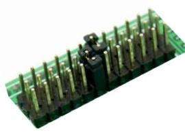
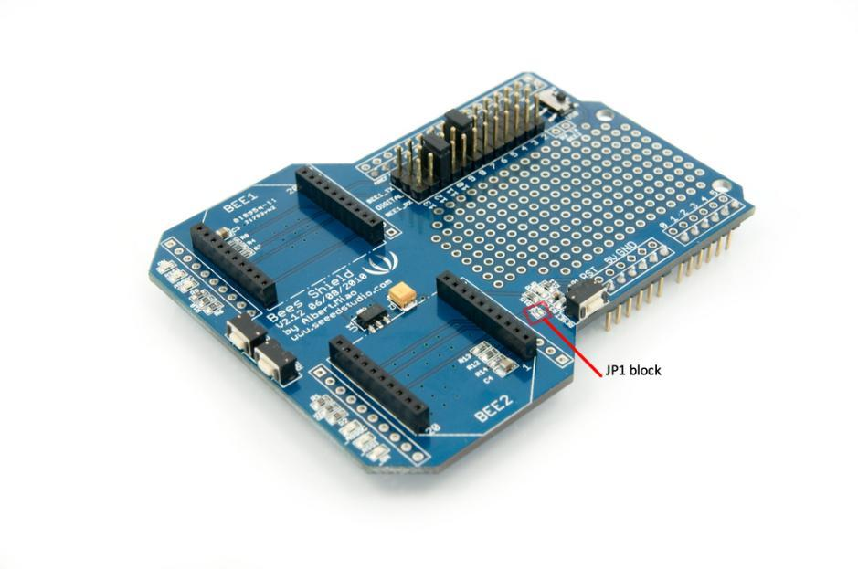
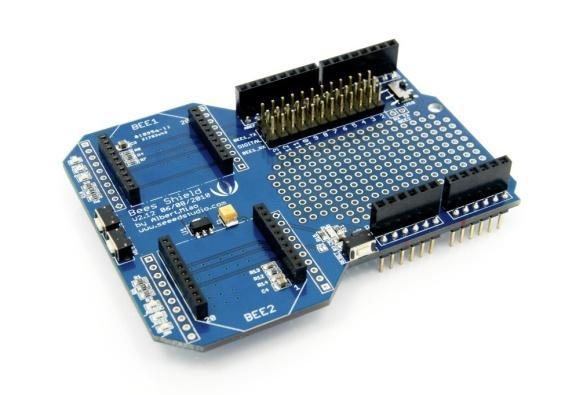
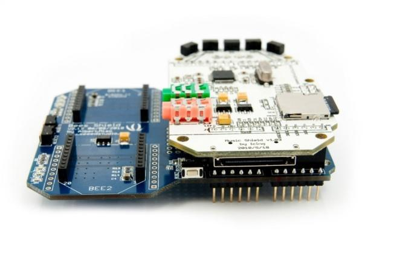

Bees_Shield will make interfacing multiple Bee-style (XBee, GPRS Bee, Bluetooth Bee and etc) easier than ever before. Aside from two Bee-style 20p 2.0 pitch sockets, it also has a large prototyping area, and a customizable software serial port for easier prototyping.
Compatible with Seeeduino, Arduino Uno and Duemilanove
Model:INT119B2P
http://www.seeedstudio.com/depot/images/product/beesshield.jpg
Plug the Xbee module into the Bee 1 socket, setting the jumpers as in the following picture.

Upload the following sketch to the Arduino via the Arduino IDE (version 1.0 or above). When it's done, open the serial monitor to communicate with another Xbee module.
#include <SoftwareSerial.h>
SoftwareSerial mySerial(7, 8);
void setup() {
Serial.begin(9600);
Serial.println("Goodnight moon!");
// set the data rate for the SoftwareSerial port
mySerial.begin(9600);
mySerial.println("Hello, world?");
}
void loop() {
// run over and over
if (mySerial.available())
Serial.write(mySerial.read());
if (Serial.available())
mySerial.write(Serial.read());
}
You can upload software for Bees only to the Bee2 socket.
void setup() {
DDRD=0x00;
}
void loop() {}
Software uploading does NOT work if the base board is using ATmega168 – we need at least ATmega328 to pass serial communication through.
Set the toggle switch to the Atmega's side if you are not uploading a sketch to the Bee2.
1) Solder the JP1 block on the board for wireless programming.

2) Configure the transmitter and the receiver as step 1 and step 2 of the ladyada website http://ladyada.net/make/xbee/arduino.html
Note that step 3 setting is unnecessary.
Or direct downloading setting profile from our website to Xbee using X-CTU.
3) Or direct downloading setting profile from our website to Xbee using X-CTU.
4) Upload the program to transmitter Xbee and the wireless programming will begin.

First we have to solder two 8-pin female headers and two 6-pin female headers on the Bees shield. After the expansion we can insert small shield like music shield on the Bees shield and wireless control it.

Please list your question here:
If you have questions or other better design ideas, you can go to our forum or wish to discuss.
| Revision | Descriptions | Release Date |
|---|---|---|
| Bees Shield v1.0 | Initial public release | Jul 02, 2010 |
Bug Tracker is the place you can publish any bugs you think you might have found during use. Please write down what you have to say, your answers will help us improve our products.
The Additional Idea is the place to write your project ideas about this product, or other usages you've found. Or you can write them on Projects page.
This documentation is licensed under the Creative Commons Attribution-ShareAlike License 3.0 Source code and libraries are licensed under GPL/LGPL, see source code files for details.
{kind=link}